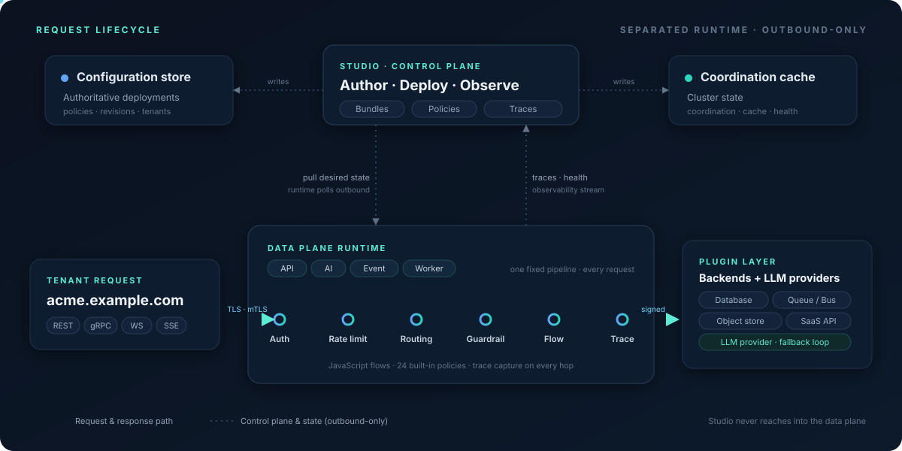

API Gateway
Tenant-aware routing for REST, HTTP/2, WebSocket, and gRPC — with JavaScript flows and a unified policy engine on every request.
Open-core platform · Releasing soon
Most teams run a different tool for each kind of traffic. WASL governs them all — API requests, AI/LLM calls, events, and async jobs — through one policy model and one observability layer, deployed anywhere from cloud to edge. Open core: an open runtime, with a commercial control plane for governance at scale.

Platform
The market is crowded with gateways that govern one kind of traffic. WASL brings API programs, LLM access, event streams, async jobs, backend integrations, and developer onboarding under one roof — authored, governed, deployed, and observed in a single place.
Tenant-aware routing for REST, HTTP/2, WebSocket, and gRPC — with JavaScript flows and a unified policy engine on every request.
Govern LLM traffic with auth, guardrails, PII handling, semantic cache, RAG, provider fallback, token limits, quota, and cost caps.
Pub/sub over plain HTTP — produce with REST, consume over SSE or long-poll. Subscriptions, schema contracts, and AsyncAPI, governed like the rest of your traffic.
Scheduled jobs, long-running orchestrations, connector polling, and async APIs — with retries, dead-letter handling, and trackable progress, off the request path.
Connect flows to databases, message queues, object storage, search, and SaaS APIs through hot-reloadable, signed plugins built on a public SDK.
One control plane to author, deploy, govern, and observe — plus a self-service portal with catalog, API keys, usage analytics, and a built-in OAuth2 server.
Interactive Shell
Select a gateway mode below to see how WASL intercepts, modifies, and validates traffic. Toggle Mock Mode, enable PII redaction checks, or trace the multi-stage request execution lifecycle.
Click "Send Governed Call" to trigger simulation.Deploy anywhere
The control plane writes deployment intent; stateless runtimes read it. Runtimes self-register, pull their desired state over an outbound-only connection, and keep serving traffic even when the control plane is offline — so you can run WASL in the cloud, on-premises, on Kubernetes, or at the edge and manage it all from one place.
AI Gateway
Every prompt runs through a fixed governance pipeline before and after the provider call — with multi-provider routing, fallback, streaming normalization, quota, and cost accounting built in.

Studio + Portal
Studio exposes the operational primitives directly — tenants, fleets, bundles, revisions, policies, certificates, traces, and deployments — and the Developer Portal gives consumers self-service API keys, subscriptions, usage analytics, and OAuth2 flows.
Observability
One trace pipeline and one analytics layer for the whole platform — Apigee-style distributed tracing, latency and throughput analytics, AI token & cost breakdowns, and alerting. No second APM to run.

Security & governance
The same unified policy engine runs at every stage of the request lifecycle — for API, AI, event, and job traffic alike. Stateful policies are cluster-aware with Redis; secrets are referenced, never stored.
Open core · Releasing soon
WASL is releasing as open core. The runtime is open and free to self-host; the enterprise control plane adds governance at scale for the teams that need it. You adopt for free and grow into the commercial edition — no rip-and-replace.
Early access · Releasing soon
WASL is releasing soon as open core. Request early access for the open runtime, the enterprise control plane, product updates, and implementation guidance.